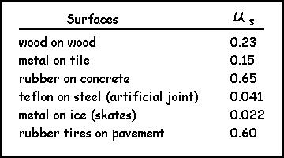
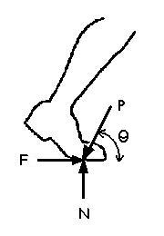
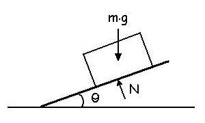

Friction
The following table lists some typical values for the coefficients of friction between some common surfaces that are encountered in the field of biomechanics.

Example: What is the minimum μs required for the foot to remain in static equilibrium?
Given: P = 1000 N and θ = 60 degrees
Solution:
The horizontal component of the pushing force is 1000 cos 60 which is 500 Newtons. For the foot to remain in static equilibrium, the friction force F must equal 500 Newtons. We know that F = μ N which means that 500 = μ N. Also, for static equilibrium, the normal force (N) must be equal to 1000 sin 60 which is 866 Newtons. Therefore, 500 = μ (866) which means that the coefficient of friction must be at least 500/866 = 0.577.
Assuming that the sole of the shoe is made of rubber and the floor is concrete, what is the minimum angle of P such that the foot will not slip and lose traction?
Solution: F = P cos θ and F = μ N where μ = 0.65 and N = P sin θ
Therefore, P cos θ = 0.65 (P sin θ). Dividing both sides by (P sin θ) gives 0.65 = P cos θ / P sin θ. Notice that P cancels and if we use the trigonometric identity (tan θ = sin θ / cos θ) we get...
1 / 0.65 = tan θ which means that θ = 57.0 degrees.
Since the pushing force (P) canceled, it doesn't matter how hard or soft the person pushes - the shoe will lose grip if the angle is reduced below 57 degrees.
Calculating μs on an inclined surface:
Since the normal force is perpendicular to the surface, N is not equal to m.g on an incline.
N = m.g cos θ
The remainder
of
the gravitational force tends to cause the object to slide down the
incline
(m.g sin θ) and it is this force that must be opposed by
friction
if the object is not to move. As the incline increases, N decreases and
so too does the friction force because F = μ
. N
Another way to look at the normal force, is that it is the compression force between the two objects and friction opposes shearing forces across the surface (see Shear and Compression Components).
You can calculate the coefficient of static friction between any two surfaces by gradually increasing the incline until the object begins to slide. The angle of the incline yields the coefficient because μs = tan θ.
If one or both of the surfaces is not very hard, the coefficient of friction can be made larger because the objects become slightly embedded into each other. This can be demonstrated by covering a surface with a fabric and repeating the experiment of the incline. Can you find a combination of fabric and object that has a coefficient that is greater than 1.0 (i.e. remains on a slope greater than 45 degrees)?